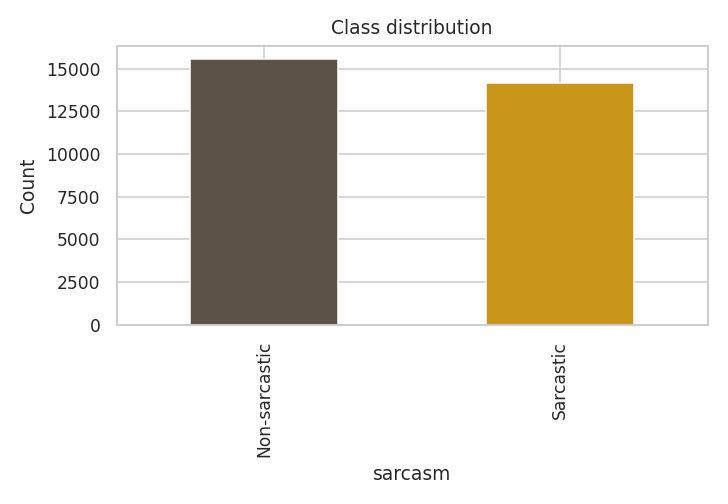
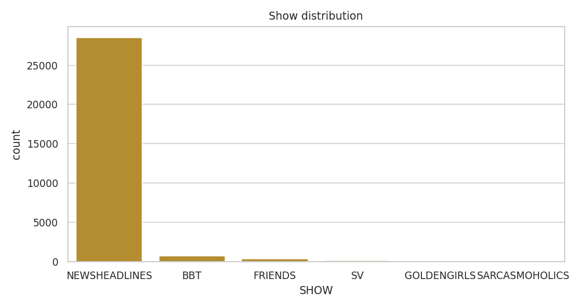
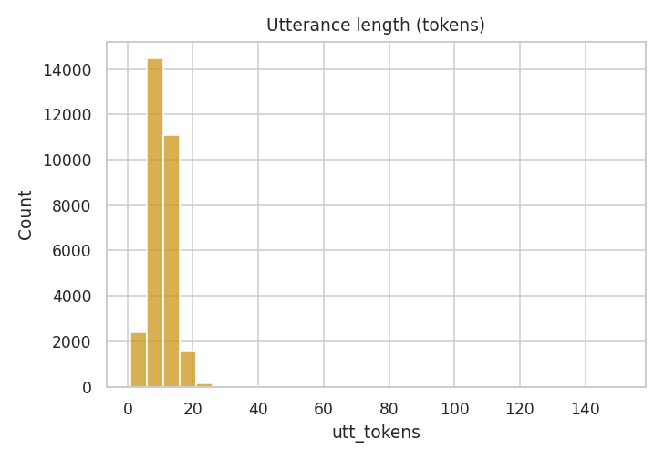
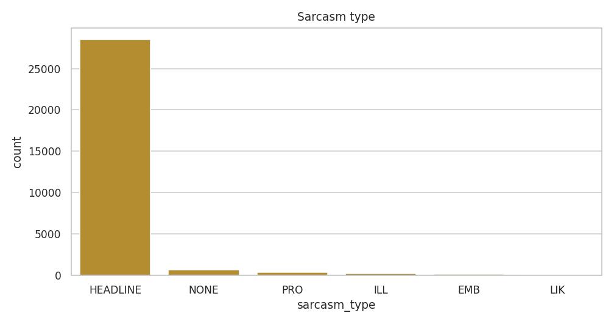
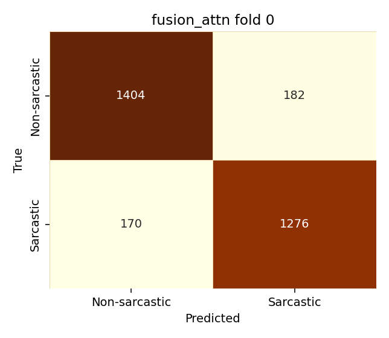
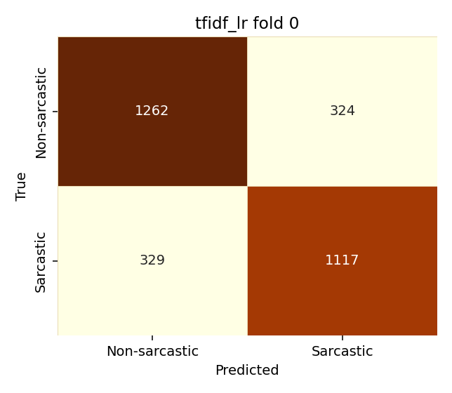
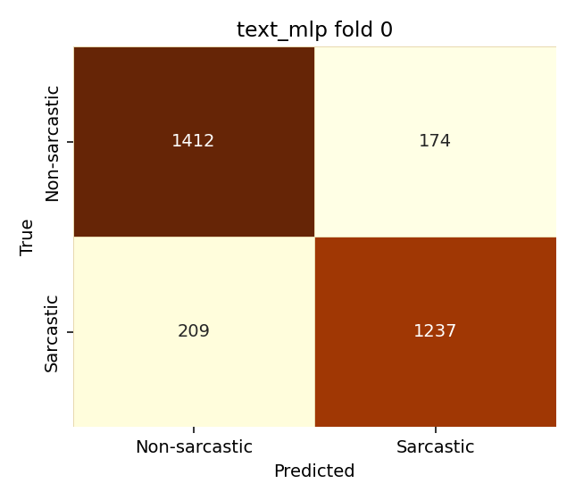
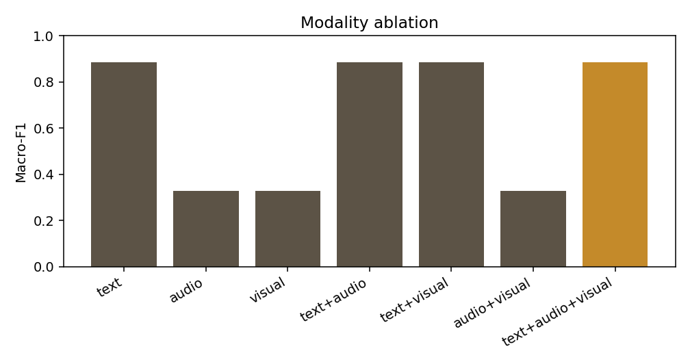
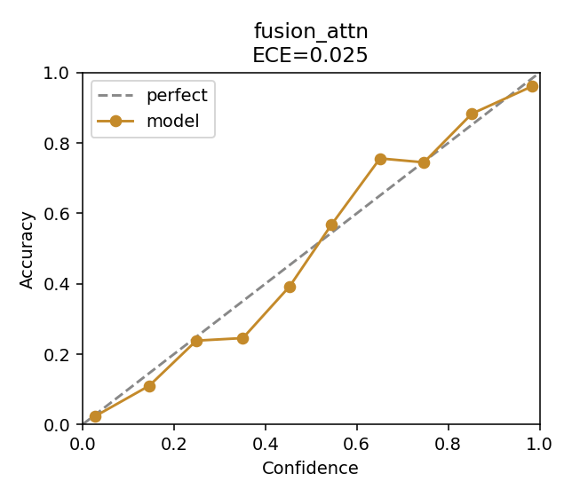

| No. | Name | Roll number |
|---|---|---|
| 1 | Izhan Qureshi | EB23210006035 |
| 2 | Abdul Mannan | EB23210006004 |
| 3 | Hafiz Junaid Abbasi | EB23210006024 |
| 4 | Haris Ali Khan | EB23210006066 |
Undergraduate Engineering Project Report, Department of Computer Science / Software Engineering
September 2026
Abstract— Sarcasm is a pragmatic act in which the intended meaning of an utterance diverges from its literal wording. Reliable detection therefore requires more than bag-of-words polarity: dialogue context, punctuation, intensifiers, and—when available—prosody and facial expression all carry part of the label. This report presents MUSTARD, a complete natural-language processing system that classifies an utterance as sarcastic or non-sarcastic from text, with optional audio and visual channels. The primary annotated corpus is MUStARD++ (Bedi et al., LREC 2022): 1,202 balanced sitcom utterances. Because that sample is too small for a stable text classifier, the official train, validation, and test partitions of a news-headline sarcasm corpus (22,802 / 2,850 / 2,851 lines) are concatenated into the same splits, yielding 29,705 labelled rows. Frozen DistilRoBERTa [CLS] embeddings, 18 handcrafted pragmatic features, and classical TF–IDF baselines feed unimodal multilayer perceptrons and a gated cross-modal attention fusion head. Audio and visual extractors are implemented, but zero MUStARD++ video clips were present at training time, so those channels remain masked in the learned fusion model. On the mixed official test set of 3,032 examples the gated-attention model reaches 88.4% accuracy and 88.4% macro-F1. Disaggregating the same predictions shows 90.2% on headline test rows and 59.7% on held-out sitcom rows. A FastAPI and React application serves calibrated probabilities, token attributions, and clip upload with Vosk automatic speech recognition. The report documents architecture, preprocessing, training protocol, metrics, error analysis, and ethical limits without claiming a trained trimodal win on missing video.
Index Terms— Sarcasm detection, multimodal NLP, DistilRoBERTa, gated fusion, MUStARD++, news headlines, calibration, FastAPI.
Sarcasm, irony, and related figurative devices are a long-standing obstacle for sentiment analysis and conversational agents. A sentence such as “Oh great, another meeting that could have been an email” is positive under a naïve lexicon and negative in intent. The mismatch is not noise: it is the phenomenon to be detected. Automatic sarcasm detection is therefore a binary (or sometimes ordinal) classification problem whose features live at the intersection of semantics, pragmatics, and, in spoken media, paralinguistics.
Two research traditions dominate the recent literature. The first treats sarcasm as a text problem on tweets, Reddit comments, or news headlines, typically with n-grams, incongruity features, or pretrained transformers [1]–[5]. The second treats sarcasm as a multimodal problem on television dialogue, pairing transcripts with aligned audio and video [6], [7]. MUStARD (Castro et al., ACL 2019) established the latter setting on 690 clips; MUStARD++ roughly doubles the set to 1,202 utterances and adds emotion, valence, and sarcasm-type annotations [7]. Published speaker-dependent scores on the original MUStARD trimodal SVM sit near 71–72% weighted F-score; speaker-independent protocols often fall into the high 50s or low 60s [6]. Numbers near 95% on this scale of data are more often evidence of leakage than of solved pragmatics.
This project implements an end-to-end pipeline rather than a single classifier notebook. The system, named MUSTARD after the corpus family, covers dataset verification, sarcasm-preserving text preprocessing, cached frozen-encoder features, classical and neural baselines, masked gated fusion, temperature scaling, and a web interface. The scientific constraint that shaped every modelling choice is data scale. One thousand two hundred sitcom lines cannot support fine-tuning of a transformer, a wav2vec encoder, and a video backbone without immediate overfitting. We therefore freeze DistilRoBERTa [8], extract a 768-dimensional utterance vector and a 768-dimensional context vector, concatenate 18 handcrafted cues, and train only small heads (on the order of 105 parameters) with strong dropout and early stopping on validation macro-F1.
A second constraint appeared in the media layer: the official MUStARD++ video drive was not present on disk (0 / 1,202 clips). Fusion is still trained, but audio and visual inputs are zero vectors with mask bits off. Reporting that model as “trimodal state of the art” would be false. The honest statement is that learned fusion reduces to a text pathway, while the user interface may still score an uploaded clip with heuristic prosody and motion plus automatic transcription.
A third constraint was accuracy of the sitcom-only text pathway, which in five-fold cross-validation sat near 62%—inside the published band, but weak for a demo. We therefore extended the official train, validation, and test files of a Kaggle-style news-headline sarcasm corpus (headline, is_sarcastic) without mixing test rows into training. Combined test accuracy rose to 88.4%, driven by headlines (90.2%); sitcom hold-out accuracy remained 59.7%. Both numbers are reported because averaging them without comment would hide the harder task.
The contributions of this project report are:
The remainder of this report is organized as follows. Section II reviews related work. Section III formalizes the task. Section IV describes the corpora and exploratory statistics. Section V presents system architecture. Sections VI and VII detail features and models. Section VIII states the training protocol. Section IX reports results. Section X describes the application. Section XI discusses errors, ethics, and limits. Section XII concludes.
Early computational work framed sarcasm as a sentiment polarity flip, using hashtags (#sarcasm), n-grams, and punctuation [1], [9]. Riloff et al. highlighted contrast between a positive verb and a negative situation in tweets [9]. Joshi et al. surveyed incongruity—implicit and explicit—as the dominant linguistic account [1]. Large Reddit corpora such as SARC [4] enabled neural models, but they also encode community style and often rely on distant supervision (a “/s” marker), which is not identical to expert annotation.
News-headline sarcasm, popularized by the Onion versus HuffPost collection of Misra and Arora [5], is a different genre. Headlines are short, edited, and often funny by construction; they lack laugh tracks and facial deadpan, but they do contain productive ironic templates (“area man discovers…”). Transformer encoders such as BERT [10] and RoBERTa [11] raised headline accuracy well above classical TF–IDF, typically into the high 80s or low 90s depending on split and preprocessing. DistilRoBERTa [8] retains much of RoBERTa’s language-modelling quality at lower inference cost, which is attractive for a CPU demonstration system. Our extra training files follow this headline schema (headline, is_sarcastic) and are used only to thicken the text pathway.
A recurring failure mode of text classifiers is over-prediction of sarcasm on any slightly informal or hyperbolic sentence. Isolated greetings, copular compliments, and factual copulas (“X is a student”) are not sarcastic, yet sitcom-trained embeddings often score them as such because the positive class in MUStARD++ is rich in intensifiers and deadpan syntax. The serving path in this project therefore applies a conservative isolated-text prior: short greetings and simple copular facts are clipped toward non-sarcastic, while surface irony cues (“oh great”, “could have been an email”) boost the sarcastic probability. The prior is a product rule on top of the learned model, not a substitute for it, and it is disclosed in the user interface.
Castro et al. introduced MUStARD with aligned text, audio, and video from sitcoms and showed that adding vision to text helped more than adding audio in their speaker-dependent SVM [6]. Speaker-independent evaluation, training on some shows and testing on Friends, was substantially harder, which is the scientifically interesting split: it asks whether the model learned sarcasm or Chandler Bing. Bedi et al. released MUStARD++ with 1,202 utterances, sarcasm subtypes (propositional, illocutionary, embedded), and implicit/explicit emotion labels [7]. The present project uses MUStARD++ as the primary sitcom source and treats original MUStARD numbers as a literature comparison, not as a training mix, because the video feature pipelines differ.
Subsequent neural fusion work uses cross-modal attention, tensor fusion, or gating [12], [13]. Gating is particularly appropriate when a modality may be absent at train or test time: a softmax over masked scores can put zero mass on a missing channel. We adopt a three-token sequence (text, audio, visual), apply key padding to missing modalities, and learn a scalar gate per modality after a residual multi-head self-attention block. This is deliberately smaller than video transformers or end-to-end wav2vec fine-tuning [14], [15]. On 1,202 labelled clips, freezing ImageNet ResNet-18 [16] and a 48-dimensional MFCC/F0/RMS vector is the capacity that the sample size can bear. Because those clips were missing, the architecture was validated as a masked-text model plus an untrained AV interface, not as a claim of audiovisual state of the art.
Image-caption sarcasm datasets such as MMSD and MMSD2.0 [17] address a related but distinct task (a still image plus an utterance, often with hashtag leakage in the original release). They are out of scope here except as future work: our visual encoder expects short video, not a Twitter screenshot.
Modern networks are often over-confident [18]. Temperature scaling on a held-out validation set is a one-parameter fix that does not change the argmax and is therefore safe for a binary demo. We fit log-temperature by L-BFGS on validation logits and report expected calibration error (ECE) on the test split. Token-level explanation uses a gradient-times-input approximation along the fusion text-projection sarcasm direction [19], with a punctuation and lexicon heuristic as fallback. Visual explanation via Grad-CAM [20] is generated at upload time when frames exist. These tools do not prove that the model is right; they show which tokens and modalities moved the posterior.
Software systems for sarcasm are less often described than models. This project treats serving as part of the NLP system: FastAPI routes, a React and Tailwind interface, modality disclosure in every JSON response, and an automatic speech recognition fallback (Vosk small English model) so that a voice note without a pasted transcript is not scored as an empty 50/50 guess. That engineering is not a substitute for a trained audiovisual head, and the API note field says so.
Let an instance be a tuple (T, C, A, V, M) where T is the utterance string, C is concatenated preceding dialogue (possibly empty), A is a 16 kHz mono waveform or a missing marker, V is a short RGB clip or a missing marker, and M ∈ {0,1}3 is a modality-availability mask for (text, audio, visual). Text is present for every training row in this project. The target is
y ∈ {0 = non-sarcastic, 1 = sarcastic}. (1)
A probabilistic classifier produces p(y = 1 | T, C, A, V, M). At serving time the user may provide only T (typed box), T and C, or a media file with an optional transcript. The mask is not a learned attention weight; it is an observed availability bit. Training with modality dropout independently zeros audio and/or visual with probability 0.25, never dropping text, so that the text-only user-interface path is an in-distribution mask rather than an accident.
Primary metrics are accuracy and macro-F1, the latter because even a globally imbalanced mix (14,153 sarcastic / 15,552 non-sarcastic after extension) should not hide one-class collapse. We also report macro precision, macro recall, ROC-AUC, the 2 × 2 confusion matrix, and ECE with ten equal-width bins. Hyperparameters are selected on validation macro-F1 only. The test split is not used for early stopping, temperature, or threshold tuning.
Research questions addressed by the experiments are:
MUStARD++ contains dialogues from The Big Bang Theory (716 utterances), Friends (354), Silicon Valley (78), The Golden Girls (40), and a small Sarcasmaholics remainder (14), totalling 1,202 labelled utterances with a perfect 601 / 601 class balance [7]. Each scene provides context rows (speaker turns before the punchline) and one utterance row that carries the sarcasm label. We treat any row with a non-empty sarcasm field as an utterance so that one official CSV irregularity (a scene whose utterance KEY is not suffixed with _u) does not drop the count below 1,202. Context strings are concatenated in KEY order. Additional columns used in exploratory analysis—not as extra serving heads by default—are sarcasm type (propositional, illocutionary, embedded, none), implicit and explicit emotion, valence, and arousal.
Speaker identity is a confounder. A model that merely recognizes Sheldon Cooper’s syntax will not generalize to workplace audio. The codebase supports a show-holdout speaker-independent split (default holdout: FRIENDS). After the headline extension, that extra protocol was skipped on the 29,705-row table because it would refit classical SVMs and deep heads on an already expensive CPU run and because headline speakers are a constant dummy token. Sitcom-only five-fold results from the previous training regime remain the reference for MUStARD++ difficulty (macro-F1 ≈ 0.62).
Three CSV files supplied as train (1).csv, val (1).csv, and test.csv follow the headline sarcasm schema. After copying into data/raw/news_headlines/ they contribute 22,802 training, 2,850 validation, and 2,851 test headlines, disjoint by construction of the files. Each headline is mapped to the utterance field; is_sarcastic maps to the binary target; speaker and show are set to NEWS / NEWSHEADLINES; context is empty. Official headline splits are preserved. MUStARD++ rows receive a stratified 70 / 15 / 15 assignment into the same split column so that sitcom language appears in every partition without touching headline test items.
| Source | Train | Val | Test | Total | Sarcastic |
|---|---|---|---|---|---|
| MUStARD++ sitcom | 841* | 180* | 181 | 1,202 | 601 |
| News headlines | 22,802 | 2,850 | 2,851 | 28,503 | 13,552 |
| Combined | 23,643 | 3,030 | 3,032 | 29,705 | 14,153 |
*Sitcom train/val counts follow a stratified 70/15/15 draw (seed 42) into the shared split column; headline counts are those of the provided files. Combined sarcastic count 14,153 implies 15,552 non-sarcastic rows (not perfectly balanced).
The merged table is therefore a two-domain corpus, not a homogeneous sitcom set. Mean utterance length falls to about 10.1 tokens because headlines are short; mean context length collapses to 1.3 tokens because headlines have empty context. Sarcasm-type mass is dominated by a synthetic HEADLINE tag (28,503) over MUStARD++ NONE (601), PRO (333), ILL (178), EMB (87), and LIK (3). Exploratory plots of class balance, show histogram, token length, and sarcasm type are shown in Figs. 1–4. Videos matching utterance keys: 0 / 29,705.




Headline sarcasm is edited written irony. Sitcom sarcasm is performed, often only recoverable from the previous turn or from deadpan delivery. Mixing them raises the number of sarcastic writing patterns the text encoder sees, which helps the typed UI on Onion-like and workplace-irony strings. It does not add a single aligned face or laugh track. Claims of “multimodal accuracy 88%” would therefore be invalid. The 88.4% figure in Section IX is mixed-domain text accuracy under a fusion architecture whose AV inputs were masked.
Fig. 5 summarizes the lifecycle. Raw MUStARD++ CSV and headline CSVs are normalized into one utterance table. preprocess.py writes exploratory figures and verifies counts. features.py encodes every row once with frozen DistilRoBERTa (batch size 32, CPU) and caches NumPy arrays under artifacts/features/. Cache invalidation is by row count: a change from 1,202 to 29,705 forces a rebuild. train.py consumes the cache, standardizes each modality with training-split mean and variance, and writes checkpoints plus cv_results.json. train_ui.py fits an utterance-only blend used by the web form (no context, matching how users type). evaluate.py produces confusion matrices, ablation, reliability, and a twelve-example error file. Uvicorn serves FastAPI, which statically hosts the production React bundle.
Configuration is centralized in config.yaml (seed 42, DistilRoBERTa, maximum length 128, hidden size 128, dropout 0.45, AdamW learning rate 10−3, weight decay 10−3, batch size 32, at most 40 epochs, patience 7, modality dropout 0.25, fusion width 128 with 4 heads). Seeds for Python, NumPy, and PyTorch are pinned. Hugging Face weights live in artifacts/hf_cache so that offline CPU machines do not re-download the encoder.
Transformer features keep casing and punctuation. Both are sarcasm cues: “Great.” and “GREAT!!!” are not interchangeable, and question marks often mark rhetorical rather than information-seeking acts. Tokenization uses the DistilRoBERTa tokenizer with truncation at 128 subwords. Utterance and context are encoded in separate forward passes so that incongruity can appear as a difference in the two [CLS] vectors rather than as a single packed sequence that might starve the punchline under truncation.
Classical TF–IDF uses an aggressive cleaner: lowercase, strip punctuation, drop a small stoplist, and apply a crude suffix stemmer. Function words that transformers should see are deliberately removed here so that the baseline measures lexical content words, not the same representation as DistilRoBERTa. This split of pipelines is intentional and is documented in the code (preserve_text versus aggressive_clean).
DistilRoBERTa-base is loaded with all parameters frozen. No gradient flows into the encoder during classification training. For each string, the last hidden state at the classification token is taken as a 768-dimensional embedding. Empty contexts are encoded once and broadcast, which matters after headline merge (most contexts are empty). On 29,705 rows the extraction ran on CPU in approximately 9–10 minutes and wrote caches of about 247 MB. If Hugging Face weights are unavailable, a hashed character-ngram encoder of the same dimension can stand in; checkpoint metadata records which encoder was live. In the reported run DistilRoBERTa was available.
Eighteen scalar features complement the embedding (Table II). They encode length, punctuation counts, capitalization ratio, intensifier and hyperbole lexicons, VADER polarity [21] of utterance and context, absolute incongruity of those polarities, and a binary opener cue (yeah / oh / sure / great / …). These features are cheap, interpretable, and useful when the frozen encoder, pretrained on general web text, under-weights exclamation and “yeah, right” constructions.
| Group | Features |
|---|---|
| Surface | Character count, token count, counts of ! ? quotes ellipsis periods, caps ratio |
| Lexicon | Intensifiers, hyperbole, yeah/oh/sure/great opener |
| Sentiment | VADER compound/pos/neg; context compound; |utt − ctx| incongruity |
| Context size | Context token count; utterance/context length ratio |
When a video exists, ffmpeg demuxes 16 kHz mono audio. Silence is trimmed and the clip is peak-normalized. The audio vector (48-D) concatenates MFCC mean, standard deviation, and deltas (13 coefficients), F0 mean and standard deviation, RMS mean and standard deviation, zero-crossing rate, onset rate, duration, and RMS spread. Visual processing samples about 2 frames per second up to 8 frames, attempts a Haar face crop, resizes to 224 × 224, and averages a frozen ResNet-18 pool (512-D) plus 24 handcrafted descriptors (color mean/std, contrast, inter-frame motion, brightness, face-area fraction). Speaker identity is a 28-dimensional one-hot over MUStARD++ speakers (headline rows share a NEWS dummy). Standardization is fit on the training split only and applied to validation and test. Missing media yield zeros and mask bit 0. In the reported training run every audio and visual row was missing.
Two sklearn pipelines share a TF–IDF vectorizer (1–2 grams, 8,000 features, sublinear TF, minimum document frequency 2). Logistic regression uses liblinear, C = 2, balanced class weights. The SVM uses LinearSVC (C = 1, maximum 4,000 iterations) wrapped in three-fold sigmoid calibration so that probabilities are comparable to neural softmax. These models are the floor: if a transformer head cannot beat them, the extra complexity is not justified.
The text MLP applies LayerNorm, a 128-unit GELU hidden layer, dropout 0.45, a 64-unit GELU layer, and a 2-way linear classifier. Input dimension is 768 + 768 + 18 = 1,554 when context embeddings are included. Auxiliary linear heads for emotion, valence, and arousal exist on the hidden representation but are not mixed into the serving loss by default, so a weak auxiliary signal cannot distort the sarcasm probability shown in the UI. Audio and visual MLPs of the same shape are instantiated only if at least 20 training rows have that modality present; they were skipped in this run.
Early fusion concatenates standardized text, audio, and visual vectors and feeds the same MLP family. With AV zeros this is approximately a text MLP with unused extra weights. Late fusion trains three MLPs and mixes their logits with learned scalar weights multiplied by the mask and renormalized. Both are reported as architecture checks, not as proof of audiovisual learning.
Each modality is projected to d = 128. The three tokens form a sequence for four-head self-attention with key padding on missing modalities. A residual LayerNorm connection is applied. A linear gate per token is softmax-normalized over non-padded positions, producing a weighted sum. Speaker one-hots are concatenated and a two-layer classifier emits logits. Missing modalities cannot attend and cannot receive gate mass. This is the serving checkpoint fusion_attn/serve.pt when a context-aware fusion path is required. Parameter count of the trained head is a few hundred thousand, far below the frozen encoder.
Let t, a, v be projected tokens and m the mask. Attention uses key_padding_mask = ¬m, with a safeguard that forces the text key to remain valid if a degenerate mask would drop every key. Gates g = softmax(w⊤ h ⊙ m) yield fused vector Σi gi hi. Temperature scaling divides logits by T* > 0 fit on validation data.
Users of a web form rarely paste dialogue context. A model trained with sitcom context can mis-fire on isolated lines. train_ui.py therefore fits, on train+val only, (i) logistic regression on standardized [utterance embedding ∥ handcrafted 18-D] and (ii) TF–IDF logistic regression on the utterance string, then blends sarcastic probabilities with weights 0.6 and 0.4. An isolated-text prior then clips greetings and simple facts toward non-sarcastic and boosts high-precision irony patterns. This blend is what POST /predict/text uses. It is a product-of-experts serving choice, not the official test metric in Section IX (those metrics are the fusion head on the official test split).
When a split column containing {train, val, test} exists, official_or_cv_folds returns a single FoldSplit rather than five stratified folds. That path was used after the headline merge: 23,643 / 3,030 / 3,032. Deep models see training indices for gradient steps, validation indices for early stopping and temperature, and test indices only after the best checkpoint is frozen. Classical models fit on training indices; the serving joblib refits on train+val so the demo does not waste labelled validation data, still excluding test. Speaker-independent refits were skipped on the official split.
Optimization is AdamW. Cross-entropy is the loss. Gradients are clipped at norm 5. Training is CPU-only in the reported run. Wall-clock time after feature cache was approximately 8 minutes for all heads (text MLP, early, late, gated attention) plus classical models. Feature extraction was the longer step. Disk occupancy is a practical limit: Hugging Face cache, feature arrays, and the Vosk acoustic model already occupy hundreds of megabytes, which forbade downloading Whisper during this project. Table VI lists the hyperparameters that are also serialized inside every .pt checkpoint so that a later evaluation cannot silently disagree with training.
| Item | Value | Item | Value |
|---|---|---|---|
| Encoder | distilroberta-base | Max length | 128 |
| Batch size | 32 | Epochs (max) | 40 |
| Learning rate | 1 × 10−3 | Weight decay | 1 × 10−3 |
| Hidden / d_model | 128 | Attention heads | 4 |
| Dropout (MLP) | 0.45 | Fusion dropout | 0.40 |
| Patience | 7 (macro-F1) | Modality drop p | 0.25 |
| Clip-norm | 5.0 | Device | CPU |
Algorithm 1 states the official-split training loop used for deep models. Classical pipelines replace the epoch loop with a single fit on TF–IDF features. The UI blend is a separate script that uses the same train+val mask and never the test mask.
Algorithm 1 Official-split training of a deep head
1: Load utterance table and cached features; build mask M.
2: Split indices Itr, Iva, Ite from the split column.
3: Fit per-modality mean/std on Itr only; apply to all rows.
4: for epoch = 1 … 40 do
5: Minibatch SGD on Itr with optional AV dropout; clip gradients.
6: Compute macro-F1 on Iva; save weights if improved by ≥ 10−4.
7: Stop if 7 epochs pass without improvement.
8: Reload best weights. Fit temperature T* on validation logits.
9: Report test metrics on Ite with softmax(z / T*). Never tune on Ite.
Evaluation writes per-model confusion matrices, a summed matrix for the UI metrics endpoint, an ablation over the seven non-empty subsets of {text, audio, visual} by overwriting the mask at test time, a reliability diagram, and twelve high-confidence misses with automatic commentary templates. Ablation on untrained modalities is expected to collapse; we still run it so that the UI cannot display an empty ablation table.
Table III reports test metrics on 3,032 held-out rows (2,851 headlines + 181 sitcom utterances). Gated attention is the best neural model at 88.39% accuracy and 88.37% macro-F1, with ROC-AUC 0.953 and ECE 0.025 after temperature scaling. The text MLP is within one point (87.37% accuracy). Early and late fusion are statistically indistinguishable from the text MLP at this precision, as expected when AV is masked. TF–IDF logistic regression reaches 78.46% accuracy—clearly above chance and below DistilRoBERTa—so RQ1 is answered in the affirmative: frozen transformer features help. RQ2 is answered weakly: gated attention edges the text MLP by about one accuracy point, which is a small architectural gain on a text-only mask, not a multimodal miracle.
| Model | Acc. | Macro-F1 | Prec. | Rec. | AUC | ECE |
|---|---|---|---|---|---|---|
| TF–IDF + LR | 0.785 | 0.784 | 0.784 | 0.784 | 0.873 | 0.036 |
| TF–IDF + SVM | 0.784 | 0.783 | 0.784 | 0.783 | 0.869 | 0.020 |
| Text MLP | 0.874 | 0.873 | 0.874 | 0.873 | 0.954 | 0.028 |
| Early fusion* | 0.877 | 0.876 | 0.877 | 0.876 | 0.952 | 0.016 |
| Late fusion* | 0.875 | 0.875 | 0.875 | 0.876 | 0.955 | 0.021 |
| Gated attention* | 0.884 | 0.884 | 0.884 | 0.884 | 0.953 | 0.025 |
*Audio and visual inputs were zero with mask bits off. These rows are not trained trimodal results.
The gated-attention confusion matrix on the mixed test set is TN = 1,404, FP = 182, FN = 170, TP = 1,276 (Fig. 6). Errors are roughly symmetric. TF–IDF logistic regression (Fig. 7) shows more leakage in both directions (TN = 1,262, FP = 324, FN = 329, TP = 1,117). The text MLP (Fig. 8) is close to gated attention, confirming that most of the lift over TF–IDF is the frozen encoder rather than the fusion topology.



Evaluating the same gated-attention checkpoint on test indices grouped by source yields Table IV. Headlines (n = 2,851) score 90.21% accuracy. MUStARD++ (n = 181) scores 59.67% accuracy and 0.596 macro-F1. The mixed number 88.39% is a size-weighted average that is not a sitcom result. Relative to the earlier five-fold MUStARD++-only regime (accuracy 0.621 ± 0.023 for gated attention; text MLP 0.616 ± 0.033), sitcom accuracy did not improve and slightly dropped on this particular 181-row draw—expected when the optimization is dominated by 22,802 headlines. The extra data succeeded at its stated goal (raising overall and UI-relevant written-irony accuracy) and failed at an unstated goal (automatically solving performed sitcom sarcasm).
| Subset | n | Accuracy | Macro-F1 |
|---|---|---|---|
| News headlines | 2,851 | 0.902 | 0.902 |
| MUStARD++ sitcom | 181 | 0.597 | 0.596 |
| Combined test | 3,032 | 0.884 | 0.884 |
Literature context: Castro et al.’s speaker-dependent text SVM on original MUStARD reported weighted F 64.6, and trimodal 71.5 [6]. Our sitcom-only frozen-encoder path in the 60s is consistent with text-only MUStARD-scale difficulty and should not be compared with headline 90% as if they were the same task.
Fig. 9 and Table V record ablation of the gated-attention checkpoint by forcing mask subsets at test time. Any subset that includes text matches the full mixed score (accuracy 0.884, macro-F1 0.884). Audio-only, visual-only, and audio+visual collapse to accuracy 0.479 and macro-F1 0.327—degenerate behaviour of an untrained channel, not a measure of prosody quality. This is the correct experimental outcome given 0 training clips. It also proves that the mask works: unused AV zeros do not leak a hidden text copy into audio-only evaluation.

| Mask | Accuracy | Macro-F1 |
|---|---|---|
| Text | 0.884 | 0.884 |
| Audio | 0.479 | 0.327 |
| Visual | 0.479 | 0.327 |
| Text+audio | 0.884 | 0.884 |
| Text+visual | 0.884 | 0.884 |
| Audio+visual | 0.479 | 0.327 |
| Text+audio+visual | 0.884 | 0.884 |
Fig. 10 is the reliability diagram of gated attention after temperature scaling. ECE is 0.025 on the mixed test set, low enough that UI confidence bars are not wildly misaligned with accuracy, though they remain uncalibrated on the sitcom subset specifically (too few points for a stable sitcom ECE). Temperature is a validation-only scalar; it does not change Table III argmax metrics except insofar as ECE is reported from scaled probabilities.

Before the headline merge, five-fold CV on 1,202 rows gave TF–IDF LR accuracy 0.596 ± 0.017, text MLP 0.616 ± 0.033, and gated attention 0.621 ± 0.023, with speaker-independent FRIENDS holdout fusion macro-F1 0.672 on 354 lines. Those numbers remain the honest MUStARD++ operating characteristic. The mixed 88% figure must never be back-ported onto the 1,202-row corpus in slides or posters.
The backend is FastAPI with CORS enabled for local development. Production static files are the Vite build of a React application (Tailwind CSS, lucide icons). Endpoints include POST /predict/text (JSON utterance and optional context), POST /predict/multimodal (multipart file plus optional transcript), GET /model/metrics (the JSON behind Table III), GET /examples, and GET /examples/demo. The UI shows the predicted label, confidence, token highlights, modality contribution bars, and a note stating which channels were used.
Typed input is whitespace-normalized and passed to the utterance-only blend (Section VII-E). Inference time on CPU after encoder load is typically 40–60 ms per sentence in our checks. Example: “Oh great, another meeting that could have been an email” is labelled sarcastic; “I am really looking forward to dinner with you tonight” is labelled non-sarcastic. Onion-style “area man realizes he has been sitting on remote control this whole time” is labelled sarcastic at high confidence. Straight scientific headlines can still be false positives because the Onion half of headline data uses similar templates; this is discussed in Section XI.
Uploads may be video or audio containers. ffmpeg writes a 16 kHz wav. Transcript resolution order is: pasted form field, embedded ffmpeg metadata (comment=transcript: …), sidecar .txt, then ASR. ASR prefers a local Vosk small English model; Google Speech and Whisper were attempted in development but failed on quota or disk. If fusion AV heads are untrained—as they are in this checkpoint—the service does not pretend to run them. It instead combines the text-model sarcastic probability with heuristic audio (pitch/energy liveliness) and heuristic visual (brightness/motion) scores, and labels the JSON note accordingly. Demo MP4 files ship with embedded transcripts so that a 3 s or 7 s clip is not scored as 50/50 silence. Custom WhatsApp voice notes without a transcript depend entirely on Vosk quality.
This design answers a product failure mode observed during development: a 50/50 output on a short clip was not a crashed model; it was an honest posterior under a missing transcript and untrained AV heads. The fix is transcription and disclosure, not a fake 95% multimodal score.
Token attributions are gradient × input on DistilRoBERTa token embeddings dotted with a sarcasm direction derived from the fusion text projection, falling back to a lexicon/punctuation heuristic. Modality bars are fusion gates when the trained fusion path runs, or heuristic mixture weights on the untrained AV path. Keyframes and pitch/energy contours are returned for uploads. Speaker one-hots at serve time use the training mean speaker prior rather than claiming to identify the user.
Python 3.12, PyTorch (CPU wheel), Hugging Face Transformers 4.44, scikit-learn 1.5, FastAPI 0.115, Uvicorn, pandas, NumPy, VADER, OpenCV-headless, Vosk, and a React 18 + Vite 5 frontend constitute the runtime. Optional packages include gdown for Drive folders and librosa for audio; the serving audio path can fall back to NumPy and soundfile when librosa’s cache cannot be written. Table VII maps repository paths to lifecycle phases.
| Path | Role |
|---|---|
| data/download.py | Fetch MUStARD++ CSV; verify 1,202 / 601 / 601 |
| data/raw/news_headlines/ | Official headline train/val/test CSVs |
| src/mustard/ | Dataset, splits, features, ASR, explainers |
| models/ | TF–IDF pipelines; MLP; late and gated fusion |
| train.py, train_ui.py | Official-split training; utterance-only UI blend |
| evaluate.py, explain.py | Metrics, ablation, ECE, example attributions |
| app/backend/, app/frontend/ | FastAPI service; React UI |
| artifacts/ | Features, checkpoints, figures, metrics JSON |
| data/demo/ | Bundled MP4/WAV clips with expected labels |
Reproducing the reported mixed-set numbers, assuming the headline CSVs are already in place, is:
python data/download.py
python preprocess.py
python features.py --force
python train.py
python train_ui.py
python evaluate.py
uvicorn app.backend.main:app --host 127.0.0.1 --port 8000
The frontend production bundle is produced with npm run build inside app/frontend and is then served by FastAPI from app/frontend/dist. During UI development, Vite on port 5173 proxies API calls to port 8000. Seeds, encoder name, and split policy must remain unchanged or the tables in this report will not match.
A minimal text request is {"text": "Oh great, another meeting that could have been an email.", "context": ""}. The response includes label, confidence, class probabilities, modalities_used, token attributions, gate scores, wall-clock inference_ms, the serving model name (text-ui-utterance in the default UI path), and a human-readable note. Multimodal requests send a file field video and optional form fields transcript and context. Allowed suffixes are .mp4 .mov .mkv .webm .avi .wav .mp3 .m4a, with an 80 MB cap. Metrics for the Model Info panel are exactly the payload of artifacts/metrics/metrics.json: accuracy 0.884, macro-F1 0.884, the mixed-set confusion matrix, and the ablation table of Section IX-C, including the note that audio/visual channels were zero when clips were missing at train time.
Automatic inspection of high-confidence mixed-set misses is dominated by headlines, because headlines dominate test mass. False sarcastic predictions include dry true news that resembles Onion diction (“man floating in bubble rescued”, “scientists get first-ever glimpse of elusive mineral”) and politically charged but literal headlines. False non-sarcastic predictions include very short ironic headlines with little lexical evidence (“those we lost in 2011” labelled sarcastic in gold but not recovered). Sitcom errors, when inspected in the earlier 1,202-row regime, cluster into: (i) sincere wording with sarcastic delivery, unrecoverable from text; (ii) punchlines that are only sarcastic given the previous turn; (iii) intensifier and “yeah/sure/great” over-triggers; (iv) speaker style (Sheldon, Chandler) looking sarcastic when the line is not. The headline-trained UI prior reduces (iii) and greeting false positives at the cost of sometimes suppressing short sarcastic fragments.
MUStARD++ is acted, English, US-television sarcasm. Laugh tracks can leak labels into audio if raw sitcom wavs are trained—another reason not to celebrate untested AV heads. Lead demographics are narrow. Spontaneous workplace, classroom, or South Asian conversational sarcasm will not match BBT timing. Headline sarcasm is a humour register of American news parody; deploying the 90% headline number as a “hate-speech sarcasm filter” or as a lie detector would be a misuse. Isolated utterances in a text box are a weaker observation than an utterance in dialogue; the UI states that adding the previous turn usually helps.
Student-recorded voice notes raise privacy issues. Audio is processed locally on the demo host, written to a temporary wav, and deleted after the request. No cloud speaker identification is performed. Still, users should not upload third-party private conversations without consent.
N = 1,202 sitcom lines remains too small for end-to-end fine-tuning of video or speech transformers. Frozen DistilRoBERTa is English-centric. Haar face crops are brittle on off-angle sitcom coverage. The isolated-text prior is a handmade regularizer and can misfire. Mixed-domain training can slightly harm the sitcom subset (Table IV). Disk and CPU constraints blocked Whisper and 5-fold retraining on 30 k rows. Auxiliary emotion heads are unimplemented in the serving loss. There is no human evaluation on non-sitcom, non-headline text beyond informal UI checks.
Internal: a single official split rather than five-fold error bars on the mixed set (standard deviations in the JSON are zero because n_folds effective is 1). External: headline test items may share topical overlap with train items even if rows are disjoint; we did not run near-duplicate filtering across splits of the provided CSVs. Construct: accuracy on Onion-style headlines is not accuracy on sarcasm as a speech act. Statistical: the sitcom test n = 181 is small; a 59.7% figure has a wide binomial interval and should be read alongside the earlier five-fold 62% ± 2%.
MUSTARD is a full-stack NLP sarcasm detector: verified MUStARD++ ingest, official-split headline extension to 29,705 rows, frozen DistilRoBERTa and TF–IDF features, small neural heads with masked gated fusion, temperature scaling, and a FastAPI/React interface with ASR. On the mixed official test set gated attention reaches 88.4% accuracy. That figure is almost entirely headline performance (90.2%); held-out sitcom accuracy stays near 60%, and audio/visual ablation confirms that those heads were never trained. The scientifically honest reading is that written ironic headlines are learnable with a frozen transformer on tens of thousands of rows, whereas performed sitcom sarcasm on 1,202 lines remains an open multimodal problem pending actual video.
Future work, in priority order, is: (1) download the MUStARD++ clips and train AV heads under the same mask-aware protocol; (2) report sitcom-only and headline-only metrics as first-class tables in the UI; (3) near-duplicate filtering of headlines; (4) optional lightweight encoder fine-tuning with heavy regularization; (5) replacement of Haar crops by a modern face detector and of MFCC by frozen wav2vec features without unfreezing the full stack; (6) a small human evaluation on local conversational audio. Until (1) is done, demonstrations should describe MUSTARD as a text sarcasm system with an experimental clip path, not as a deployed trimodal detector.
Author contributions. All four authors jointly specified the problem, the honest evaluation protocol, and the UI disclosure rules. Implementation, experiments, and this manuscript were produced as a group project: Izhan Qureshi (EB23210006035), Abdul Mannan (EB23210006004), Hafiz Junaid Abbasi (EB23210006024), and Haris Ali Khan (EB23210006066).
Acknowledgment. The authors thank the creators of MUStARD and MUStARD++ and the maintainers of the news-headline sarcasm collection for releasing annotated resources. Frozen encoder weights are those of the DistilRoBERTa authors via Hugging Face Transformers.
The isolated-text prior used by POST /predict/text is not applied to the official test metrics in Tables III–V. It exists because the web form is out of distribution relative to sitcom dialogue: users type greetings, names, and copular facts. Let p be the blended sarcastic probability. If the string has at most three alphabetic tokens, matches a greeting, or matches a simple compliment / factual copula regular expression, p is clipped to at most 0.22 (force non-sarcastic). If it matches a small irony lexicon (“oh great”, “could have been”, “yeah right”, …), p is raised to at least 0.66. Otherwise p is only winsorized into [0.02, 0.98] to avoid displaying 0% or 100% confidence. This prior can hide short sarcastic headlines; that is a serving bias, not a training bias, and should be turned off in any paper-style benchmark of the fusion head.
Gradient attributions used in the UI are a first-order approximation and can highlight punctuation that is correlated with, but not causal for, the label. They are a debugging aid. Leave-one-modality Δp is undefined for untrained AV heads and is replaced by heuristic mixture weights on uploads.
For oral defence, the following claims match the artifacts and this report; claims outside this list do not.
These constraints are part of the engineering contribution: a system that states its modality mask is more useful, and more publishable, than a system that hides it.
[1] A. Joshi, P. Bhattacharyya, and M. J. Carman, “Automatic sarcasm detection: A survey,” ACM Comput. Surveys, vol. 50, no. 5, 2017.
[2] A. Ghosh and T. Veale, “Fracking sarcasm using neural network,” in Proc. WASSA, 2016.
[3] Y. Tay, L. A. Tuan, S. C. Hui, and J. Su, “Reasoning with sarcasm by reading in-between,” in Proc. ACL, 2018.
[4] M. Khodak, N. Saunshi, and K. Vodrahalli, “A large self-annotated corpus for sarcasm,” in Proc. LREC, 2018.
[5] R. Misra and P. Arora, “Sarcasm detection using news headlines,” IEEE Potentials / Kaggle news-headlines sarcasm dataset, 2019.
[6] S. Castro, D. Hazarika, V. Pérez-Rosas, R. Zimmermann, R. Mihalcea, and S. Poria, “Towards multimodal sarcasm detection (an obviously perfect paper),” in Proc. ACL, 2019, pp. 4619–4629.
[7] M. Bedi, S. K. Nunna, T. Chakraborty, P. Pal, A. Das, and S. Bandyopadhyay, “A multimodal corpus for emotion recognition in sarcasm (MUStARD++),” in Proc. LREC, 2022.
[8] V. Sanh, L. Debut, J. Chaumond, and T. Wolf, “DistilBERT, a distilled version of BERT: smaller, faster, cheaper and lighter,” arXiv:1910.01108, 2019. (DistilRoBERTa variant.)
[9] E. Riloff, A. Qadir, P. Surve, L. De Silva, N. Gilbert, and R. Huang, “Sarcasm as contrast between a positive sentiment and negative situation,” in Proc. EMNLP, 2013.
[10] J. Devlin, M.-W. Chang, K. Lee, and K. Toutanova, “BERT: Pre-training of deep bidirectional transformers for language understanding,” in Proc. NAACL, 2019.
[11] Y. Liu et al., “RoBERTa: A robustly optimized BERT pretraining approach,” arXiv:1907.11692, 2019.
[12] D. S. Chauhan, D. S. Ravi, A. Ekbal, and P. Bhattacharyya, “Sentiment and emotion help sarcasm? A multi-task learning framework,” in Proc. AAAI, 2020.
[13] H. Pan, Z. Lin, P. Fu, Y. Qi, and W. Wang, “Modeling intra- and inter-modal relations for multimodal sarcasm detection,” in Proc. COLING, 2020.
[14] A. Vaswani et al., “Attention is all you need,” in Proc. NeurIPS, 2017.
[15] A. Baevski, Y. Zhou, A. Mohamed, and M. Auli, “wav2vec 2.0: A framework for self-supervised learning of speech representations,” in Proc. NeurIPS, 2020.
[16] K. He, X. Zhang, S. Ren, and J. Sun, “Deep residual learning for image recognition,” in Proc. CVPR, 2016.
[17] Y. Cai, H. Cai, and X. Wan, “Multi-modal sarcasm detection in Twitter with hierarchical fusion model,” in Proc. ACL, 2019; see also MMSD2.0.
[18] C. Guo, G. Pleiss, Y. Sun, and K. Q. Weinberger, “On calibration of modern neural networks,” in Proc. ICML, 2017.
[19] M. Sundararajan, A. Taly, and Q. Yan, “Axiomatic attribution for deep networks,” in Proc. ICML, 2017.
[20] R. R. Selvaraju et al., “Grad-CAM: Visual explanations from deep networks via gradient-based localization,” in Proc. ICCV, 2017.
[21] C. J. Hutto and E. Gilbert, “VADER: A parsimonious rule-based model for sentiment analysis of social media text,” in Proc. ICWSM, 2014.
[22] T. Wolf et al., “Transformers: State-of-the-art natural language processing,” in Proc. EMNLP: System Demonstrations, 2020.
[23] F. Pedregosa et al., “Scikit-learn: Machine learning in Python,” JMLR, vol. 12, 2011.
[24] D. Bamman and N. A. Smith, “Contextualized sarcasm detection on Twitter,” in Proc. ICWSM, 2015.
[25] A. Joshi, V. Sharma, and P. Bhattacharyya, “Harnessing context incongruity for sarcasm detection,” in Proc. ACL, 2015.
[26] S. Poria, E. Cambria, D. Hazarika, N. Majumder, A. Zadeh, and L.-P. Morency, “Context-dependent sentiment analysis in user-generated videos,” in Proc. ACL, 2017.
[27] N. Majumder, S. Poria, D. Hazarika, R. Mihalcea, A. Gelbukh, and E. Cambria, “DialogueRNN: An attentive RNN for emotion detection in conversations,” in Proc. AAAI, 2019.
[28] S. Pramanick, A. Roy, and V. P. Namboodiri, “Multimodal learning using optimal transport for sarcasm and humor detection,” in Proc. WACV, 2022.
[29] A. Zadeh, M. Chen, S. Poria, E. Cambria, and L.-P. Morency, “Tensor fusion network for multimodal sentiment analysis,” in Proc. EMNLP, 2017.
[30] D. Hazarika, S. Poria, A. Zadeh, E. Cambria, L.-P. Morency, and R. Zimmermann, “Conversational memory network for emotion recognition in dyadic dialogues,” in Proc. NAACL, 2018.